BE
';" />Pasión verdiblanca
Real Betis Balompié
1907
Año de fundación del club
Verdiblancos / Béticos
Una breve historia
Fundado en 1907, el Real Betis es sinónimo de una de las aficiones más pasionales de España, con el lema 'Viva el Betis manque pierda' (aunque pierda). Ganó su primera Copa del Rey en 1977 y esperó 45 años para la segunda, en 2022.
Fieles a los colores
de Sevilla
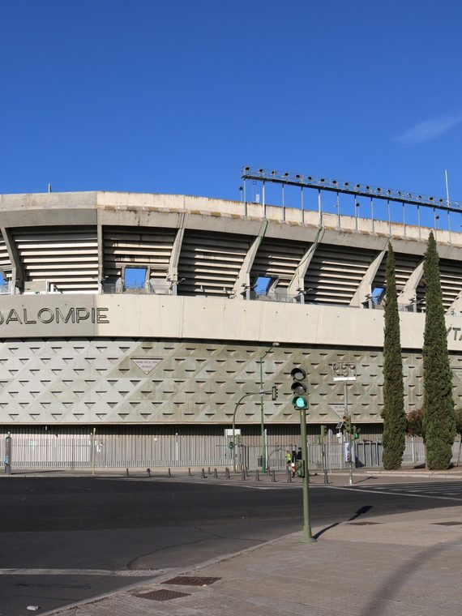
📷Foto pendiente
(real-betis-1.jpg)';" />
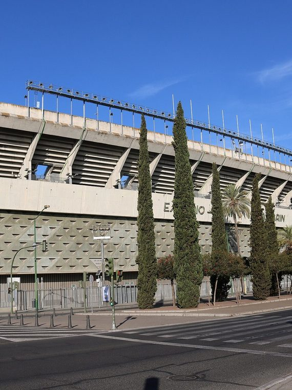
📷Foto pendiente
(real-betis-2.jpg)';" />
Títulos y logros
Vitrina de títulos
0
LaLiga
0
Copa del Rey
La rivalidad
El duelo que enciende a la afición
Real Betis Balompié
VS
Sevilla FC — El Gran Derbi
Temporada 2026 / 27
Plantilla del primer equipo
Datos de ejemplo — reemplázalos con la plantilla real en data/teams.js.
1
🧑';" />
Á.valles
Portero
2
🧑';" />
Bellerín
Defensa
3
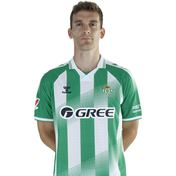
🧑';" /> Llorente R. Defensa
4
🧑';" />
Natan
Defensa
5
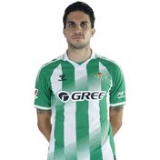
🧑';" /> Bartra Defensa
6
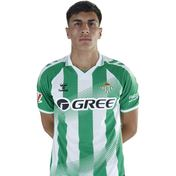
🧑';" /> F. Bernal Centrocampista
7
🧑';" />
Antony
Delantero
8
🧑';" />
P. Fornals
Centrocampista
9
🧑';" />
C. Hernández
Delantero
10
🧑';" />
Ez Abde
Delantero
11
🧑';" />
Fran García
Defensa
12
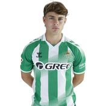
🧑';" /> Á. Ortiz Centrocampista
13
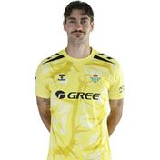
🧑';" /> Diego Conde Portero
14
🧑';" />
Iker
Centrocampista
15
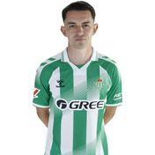
🧑';" /> Fidalgo Centrocampista
16
🧑';" />
V. Gómez
Defensa
17
🧑';" />
Riquelme
Centrocampista
18
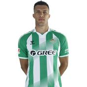
🧑';" /> N. Deossa Centrocampista
19
🧑';" />
Parrott
Delantero
20
🧑';" />
Lo Celso
Centrocampista
21
🧑';" />
Marc Roca
Centrocampista
22
🧑';" />
Isco
Centrocampista
23
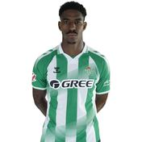
🧑';" /> J. Firpo Defensa
24
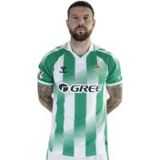
🧑';" /> Aitor Ruibal Delantero
25
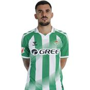
🧑';" /> D. Ceballos Centrocampista
27
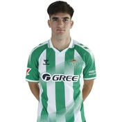
🧑';" /> Morante Delantero
31
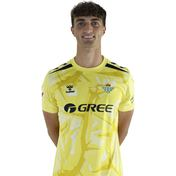
🧑';" /> Manu G. Portero
40
🧑';" />
Á. De Pablo
Portero